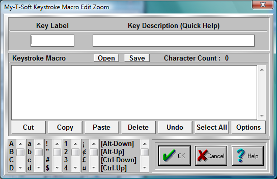

| My-T-Soft®: for Windows; Indestructible Keyboards and Indispensable Utilities; Version 1.80; User's Guide | ||
|---|---|---|
| Prev | Next | |

Key Label
Key label will show which button is currently edited.
Key Description
Enter a detailed description (will appear on Quick Help).
In order to create a keystroke Macro follow these steps:
There are six vertical selection lists in the bottom left corner of the dialog box. Select & double-click to add to the Keystroke Macro.
Use the up-and-down arrows to select the appropriate keystrokes, then double-click to enter into the Keystroke Macro.
For example, double-click on Alt-Down to simulate pressing the Alt button down.
Now, double-click on the letter F.
Now, release the Alt button by double-clicking on Alt-Up.
Finally, double-click on the letter v.
This Macro [Alt-Down]f[Alt-Up]v will bring up the Print Preview while running MS Word!
You may edit the Keystroke Macro directly in the Edit window. You may wish to refer to the Advanced User Notes for options & details regarding the keystroke macros.
Reserved words in brackets [ ] will only function properly when typed exactly! They may be used to indicate combination keystrokes. For example, to execute Ctrl-S it must appear as [Ctrl-Down]s[Ctrl-Up]. This allows you to execute more than one character with the combination key depressed.
NOTE: For proper operation, you must have EVERY keystroke required! (Don't forget [Enter]) If the macro does not operate as desired, review & verify that each keystroke and the sequence of keystrokes is accurate. Also make sure that the correct Application is Active when the Macro is initiated.
There are seven buttons with standard editing options:
CUT - Cuts the highlighted portion of a Macro.
COPY - Copies the highlighted portion of a Macro.
PASTE - Pastes the highlighted portion of a Macro (must be preceded by a CUT or COPY).
DELETE - Deletes the highlighted portion of a Macro. (UNDO will not recover!)
UNDO - Undoes the previous operation (like a CUT OR DELETE).
SELECT ALL - Selects the whole Macro.
OPTIONS - Changes to a different set of seven editing buttons.
There are seven buttons with advanced editing options (Useful if you are pasting in text from other applications):
CLEAR ALL - Clears the editing Window, even if nothing is highlighted. (Erases the entire macro).
CR - Changes carriage returns to [Enter]. (ANSI character 13)
CRLF - Changes carriage return-line feed to [Enter}. (ANSI characters 13 10)
TAB - Changes tab to [Tab]. (ANSI character 9)
STRIP - Strips all ANSI characters. (Removes all non-ANSI characters from text)
ALL - Does all of the above (CRLF, TAB, STRIP)
EDITING - Returns to the previous seven buttons.
The Open and Save buttons are available as conveniences for developers using the MACROBAT and other IMG utilities. These will use the Zoom Edit screen as an the Editing area - Open will open, read, and place the contents of a previously Saved Macro into the Zoom Edit area. The KMF (Keyboard Macro File) format is used.
The special selections [Time], [Date], and [Pause] can be used as follows: [Time] and [Date] insert the current system time as formatted via the System Information panel (formatted as set in the Windows Regional Settings).
[Pause] inserts an "empty" keystroke in the sequence of keystrokes. This is a special option along with other specialty macros otherwise undocumented.
Click on the OK Button to save the current options.
Click on the CANCEL button to Close the Dialog & cancel any changes.